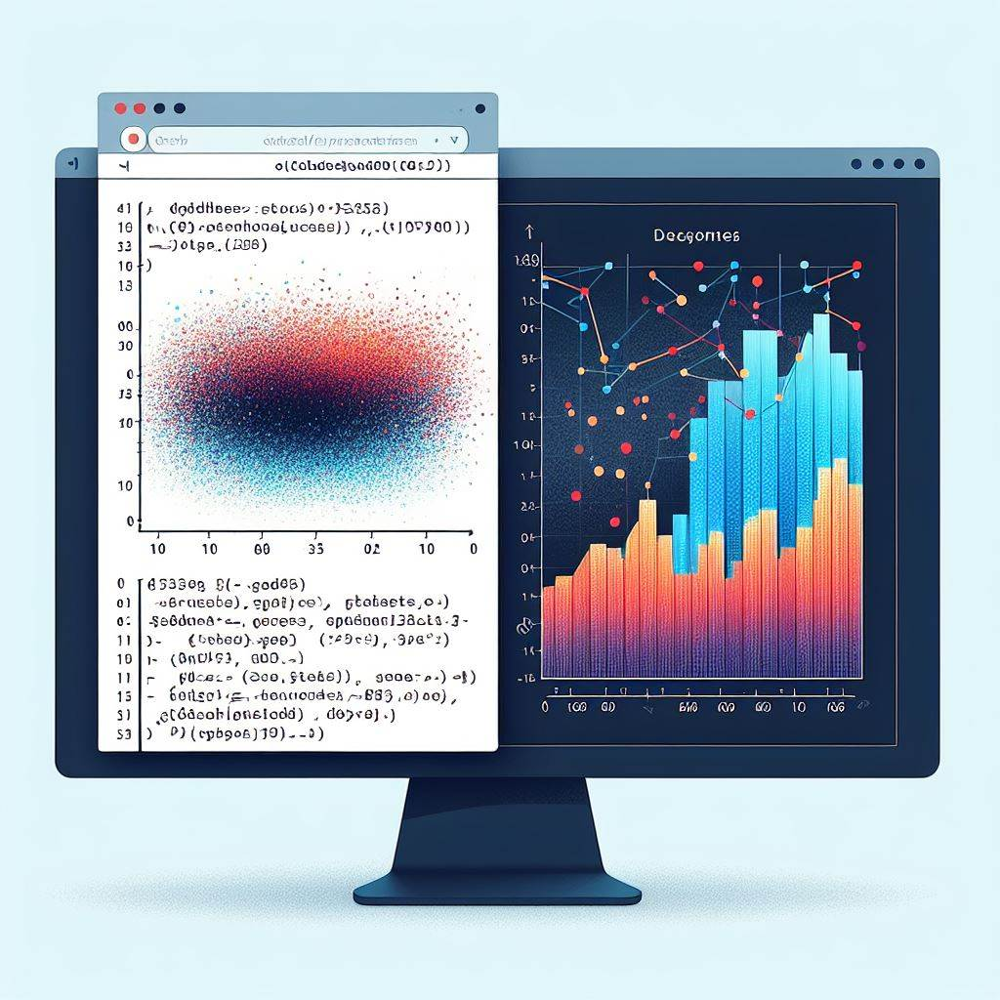
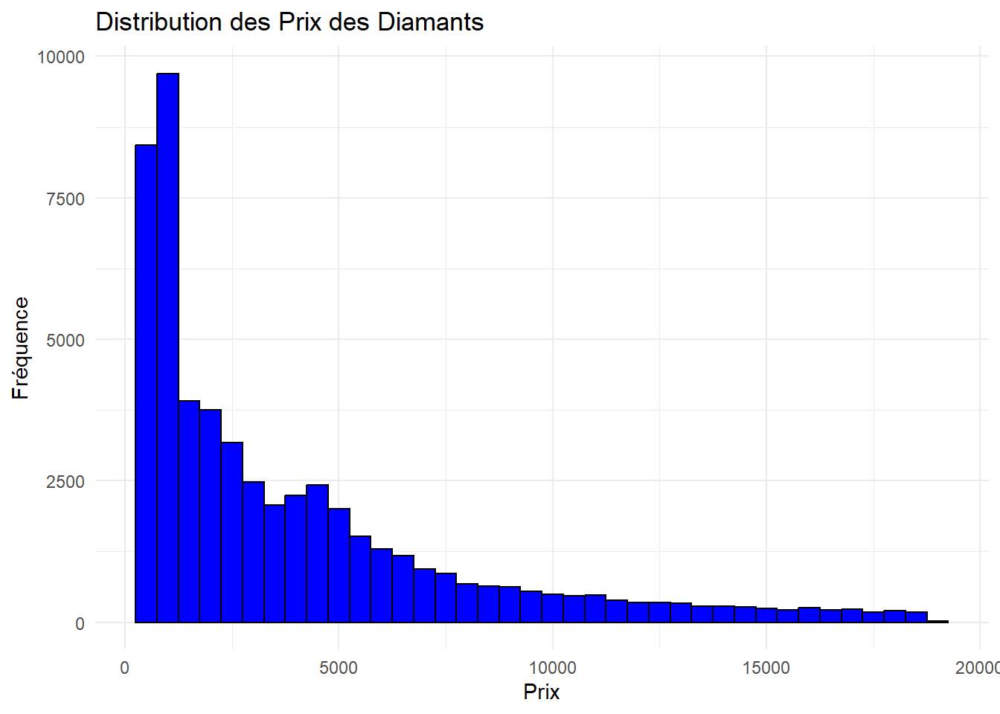
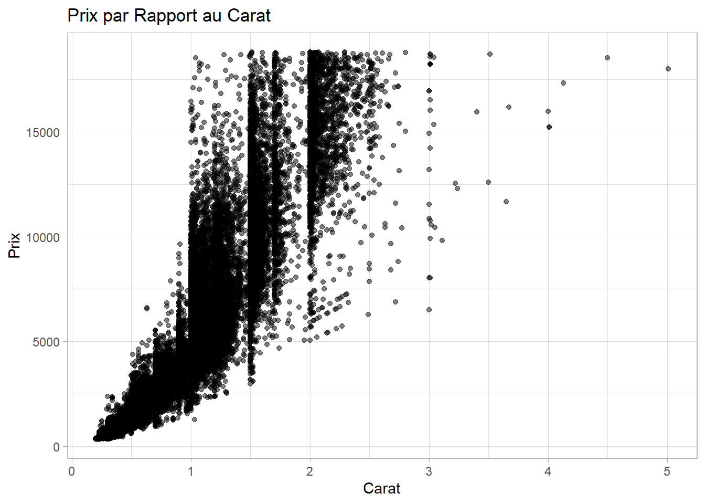
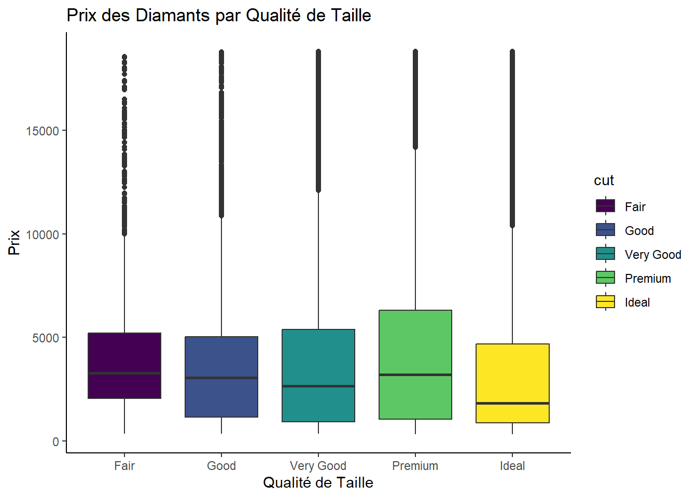

L’extension rmarkdown est un outil puissant pour la création de documents dynamiques dans l’environnement de programmation R. Il permet d’intégrer du code R, des résultats, et des narrations dans un seul document. Voici une explication détaillée de ses caractéristiques et de son fonctionnement : Les documents générés peuvent être au format HTML, PDF, Word, et bien d’autres. C’est donc un outil très pratique pour l’exportation, la communication et la diffusion de résultats d’analyse.

L’Analyse en 7 étapes
Pour cette analyse nous allons prendre les données du jeu de données “diamonds”, disponibles dans le package ggplot2 en R, constituent un choix excellent pour mener une analyse exploratoire approfondie. Ce jeu de données comporte des informations sur les prix et les caractéristiques de près de 54 000 diamants. Voici un exemple d’analyse que vous pourriez entreprendre avec ces données :
Étape 1: Préparation de l’Environnement
Avant de démarrer tout projet, il est essentiel de charger les bibliothèques nécessaires et de charger les données pertinentes.
# Chargement des packages nécessaireslibrary(ggplot2)library(dplyr)
Warning: package 'dplyr' was built under R version 4.3.2
Attaching package: 'dplyr'
The following objects are masked from 'package:stats':
filter, lag
The following objects are masked from 'package:base':
intersect, setdiff, setequal, union
# Chargement des donnéesdata("diamonds")
Étape 2: Aperçu des Données
L’aperçu des données, qui comprend l’affichage des premières lignes est crucial lors d’une analyse pour plusieurs raisons :
Compréhension initiale des données: En examinant les premières lignes, on obtient une idée immédiate de la structure des données, des types de variables et des valeurs qu’elles contiennent. Cela permet de mieux comprendre la nature des données avec lesquelles on travaille.
Détection des erreurs ou des valeurs aberrantes: L’examen des premières lignes peut aider à identifier d’éventuelles erreurs de saisie ou des valeurs aberrantes qui pourraient affecter l’analyse. Par exemple, des valeurs manquantes, des valeurs nulles inattendues ou des valeurs extrêmement élevées ou basses peuvent être repérées rapidement.
Identification des tendances ou des motifs initiaux: En regardant les premières lignes, on peut commencer à repérer des tendances ou des motifs initiaux dans les données. Cela peut orienter l’analyse future en mettant en lumière des aspects importants à explorer davantage.
#Affichage des premières ligneshead(diamonds)
# A tibble: 6 × 10
carat cut color clarity depth table price x y z
<dbl> <ord> <ord> <ord> <dbl> <dbl> <int> <dbl> <dbl> <dbl>
1 0.23 Ideal E SI2 61.5 55 326 3.95 3.98 2.43
2 0.21 Premium E SI1 59.8 61 326 3.89 3.84 2.31
3 0.23 Good E VS1 56.9 65 327 4.05 4.07 2.31
4 0.29 Premium I VS2 62.4 58 334 4.2 4.23 2.63
5 0.31 Good J SI2 63.3 58 335 4.34 4.35 2.75
6 0.24 Very Good J VVS2 62.8 57 336 3.94 3.96 2.48
Compréhension des distributions et des statistiques descriptives: Le résumé des données fournit des statistiques descriptives telles que la moyenne, la médiane, l’écart type, etc. Cela aide à comprendre la distribution des variables et à identifier les valeurs centrales ainsi que la dispersion des données. En somme, l’aperçu initial des données est une étape cruciale dans tout projet d’analyse, car il fournit les bases nécessaires pour comprendre les données et guider les étapes suivantes de l’analyse.
# Résumé des donnéessummary(diamonds)
carat cut color clarity depth
Min. :0.2000 Fair : 1610 D: 6775 SI1 :13065 Min. :43.00
1st Qu.:0.4000 Good : 4906 E: 9797 VS2 :12258 1st Qu.:61.00
Median :0.7000 Very Good:12082 F: 9542 SI2 : 9194 Median :61.80
Mean :0.7979 Premium :13791 G:11292 VS1 : 8171 Mean :61.75
3rd Qu.:1.0400 Ideal :21551 H: 8304 VVS2 : 5066 3rd Qu.:62.50
Max. :5.0100 I: 5422 VVS1 : 3655 Max. :79.00
J: 2808 (Other): 2531
table price x y
Min. :43.00 Min. : 326 Min. : 0.000 Min. : 0.000
1st Qu.:56.00 1st Qu.: 950 1st Qu.: 4.710 1st Qu.: 4.720
Median :57.00 Median : 2401 Median : 5.700 Median : 5.710
Mean :57.46 Mean : 3933 Mean : 5.731 Mean : 5.735
3rd Qu.:59.00 3rd Qu.: 5324 3rd Qu.: 6.540 3rd Qu.: 6.540
Max. :95.00 Max. :18823 Max. :10.740 Max. :58.900
z
Min. : 0.000
1st Qu.: 2.910
Median : 3.530
Mean : 3.539
3rd Qu.: 4.040
Max. :31.800
Étape 3: Analyse de la Distribution des Prix
Un graphique de dispersion montrant la relation entre le prix et le carat dans un ensemble de données de diamants offre une visualisation puissante de la corrélation entre ces deux variables. Voici une explication de cette relation:
Tendance générale: En traçant le prix sur l’axe des ordonnées (vertical) et le carat sur l’axe des abscisses (horizontal), le graphique de dispersion permet d’observer la tendance générale des données. Habituellement, on s’attend à voir une relation positive, ce qui signifie que les prix des diamants ont tendance à augmenter avec le poids en carats. Degré de dispersion: En examinant la dispersion des points autour de la tendance générale, on peut évaluer à quel point la relation entre le prix et le carat est forte ou faible. Une dispersion faible indique une relation plus étroite entre les deux variables, tandis qu’une dispersion plus importante suggère une relation moins cohérente. Détection des valeurs aberrantes: Les points qui s’éloignent considérablement de la tendance générale peuvent être des valeurs aberrantes, c’est-à-dire des observations qui se distinguent du reste des données. Ces valeurs peuvent être importantes à examiner de plus près, car elles pourraient révéler des informations intéressantes sur les diamants qui se démarquent en termes de prix par rapport à leur poids en carats. Analyse des clusters: Parfois, le graphique de dispersion peut révéler des clusters ou des regroupements de points, ce qui peut indiquer la présence de sous-populations distinctes dans les données. Par exemple, il pourrait y avoir un cluster de diamants avec un poids en carats relativement faible mais un prix élevé, ce qui pourrait indiquer la présence de diamants de haute qualité mais de petite taille.
# Histogramme de la distribution des prixggplot(diamonds, aes(x = price)) +geom_histogram(binwidth =500, fill ="blue", color ="black") +theme_minimal() +labs(title ="Distribution des Prix des Diamants",x ="Prix", y ="Fréquence")

En somme, le graphique de dispersion de la relation entre le prix et le carat offre une vue d’ensemble intuitive et informative de la relation entre ces deux variables clés dans l’ensemble de données de diamants, permettant ainsi une analyse plus approfondie des facteurs influençant les prix des diamants.
Étape 4: Relation entre le Prix et la Qualité du Carat
Un graphique de dispersion est un outil visuel puissant pour explorer la relation entre deux variables continues, comme le prix et le poids en carats dans le cas des diamants. Voici une explication de la signification de ce graphique dans le contexte de la relation entre le prix et la qualité du carat:
Axe horizontal (X) - Carat: Sur l’axe horizontal, nous avons le poids en carats des diamants. Chaque point sur l’axe représente un diamant individuel dans l’ensemble de données. Le poids en carats est une mesure importante de la taille d’un diamant et est souvent associé à sa valeur. Axe vertical (Y) - Prix: Sur l’axe vertical, nous avons les prix des diamants correspondants. Chaque point représente le prix d’un diamant, aligné avec son poids en carats sur l’axe horizontal. Le prix est une mesure clé de la valeur d’un diamant et est influencé par plusieurs facteurs, dont le poids en carats. Tendance générale: En examinant le schéma général formé par les points sur le graphique, nous pouvons observer s’il existe une tendance ou une relation entre le prix et le poids en carats. Habituellement, dans le contexte des diamants, on s’attend à voir une tendance positive, ce qui signifie que les prix augmentent généralement avec le poids en carats. Cependant, des variations peuvent exister en raison d’autres facteurs tels que la qualité de la taille, la pureté et la couleur du diamant. Dispersion des points: La dispersion des points autour de la tendance générale peut révéler des informations supplémentaires sur la variabilité des prix pour un poids en carats donné. Une dispersion plus large peut indiquer une plus grande variabilité des prix pour les diamants de taille similaire, tandis qu’une dispersion plus étroite peut indiquer une cohérence plus élevée des prix.
# Graphique de dispersion montrant la relation entre le prix et le caratggplot(diamonds, aes(x = carat, y = price)) +geom_point(alpha =0.5) +theme_light() +labs(title ="Prix par Rapport au Carat",x ="Carat", y ="Prix")

En somme, le graphique de dispersion permet de visualiser facilement la relation entre le prix et la qualité du carat des diamants, offrant ainsi des insights sur la manière dont ces deux variables sont liées dans l’ensemble de données.
Étape 5: Analyse par Catégorie de Taille
Un boxplot du prix par catégorie de taille dans un ensemble de données de diamants offre une visualisation concise et informative de la distribution des prix en fonction des différentes catégories de taille. Voici une explication de cette analyse:
Comparaison des distributions: Le boxplot divise les données en catégories de taille et représente la distribution des prix au sein de chaque catégorie sous forme de boîtes. En comparant ces boîtes les unes par rapport aux autres, on peut observer les différences de distribution des prix entre les différentes catégories de taille. Tendances centrales: La ligne médiane à l’intérieur de chaque boîte représente la médiane des prix pour chaque catégorie de taille. En examinant les positions relatives de ces médianes, on peut identifier les tendances centrales des prix pour les différentes catégories de taille. Par exemple, une médiane plus élevée dans une catégorie de taille indique généralement des prix plus élevés dans cette catégorie par rapport aux autres. Variabilité des prix: La taille des boîtes dans le boxplot représente la variabilité des prix au sein de chaque catégorie. Une boîte plus grande indique une plus grande dispersion des prix, tandis qu’une boîte plus petite indique une dispersion plus faible. Cela permet d’évaluer la cohérence des prix au sein de chaque catégorie de taille. Détection des valeurs aberrantes: Les points situés à l’extérieur des moustaches du boxplot peuvent être des valeurs aberrantes, ce qui signifie des observations qui se distinguent considérablement du reste des données dans une catégorie de taille donnée. Ces valeurs peuvent nécessiter une attention particulière pour comprendre pourquoi elles diffèrent autant des autres observations.
# Boxplot du prix par catégorie de tailleggplot(diamonds, aes(x = cut, y = price, fill = cut)) +geom_boxplot() +theme_classic() +labs(title ="Prix des Diamants par Qualité de Taille", x ="Qualité de Taille", y ="Prix")

En conclusion, le boxplot du prix par catégorie de taille fournit une vue d’ensemble claire et informative de la distribution des prix des diamants en fonction de leur taille, permettant ainsi une comparaison facile entre les différentes catégories et une identification des tendances et des valeurs aberrantes.
Étape 6: Corrélation entre les Caractéristiques
L’utilisation de la fonction cor() pour calculer les corrélations entre les caractéristiques dans un ensemble de données de diamants permet d’explorer les relations linéaires entre les variables quantitatives. Voici une explication de cette analyse:
Matrice de corrélation: La fonction cor() calcule les corrélations entre toutes les paires de variables quantitatives dans l’ensemble de données, ce qui produit une matrice de corrélation. Cette matrice indique la force et la direction de la relation linéaire entre chaque paire de variables. Interprétation des coefficients de corrélation: Les coefficients de corrélation peuvent varier de -1 à 1. Un coefficient proche de 1 indique une corrélation positive parfaite, ce qui signifie que les variables augmentent ensemble. Un coefficient proche de -1 indique une corrélation négative parfaite, ce qui signifie que les variables varient en sens opposé. Un coefficient proche de 0 indique une faible corrélation linéaire. Identification des relations importantes: En examinant la matrice de corrélation, on peut identifier les paires de variables qui sont fortement corrélées entre elles. Ces relations peuvent être importantes à explorer davantage, car elles indiquent des liens potentiels entre les caractéristiques des diamants. Orientation de l’analyse: Les résultats de la corrélation peuvent orienter l’analyse future en mettant en évidence les variables qui sont étroitement liées les unes aux autres. Par exemple, si le prix est fortement corrélé avec le poids en carats, cela pourrait indiquer que le poids en carats est un facteur important dans la détermination du prix des diamants.
# Utilisation de cor() pour calculer les corrélationscor(diamonds[,c("price", "carat", "depth", "table")])
En conclusion, l’utilisation de la fonction cor() pour calculer les corrélations entre les caractéristiques dans un ensemble de données de diamants permet d’explorer les relations linéaires entre les variables quantitatives et d’identifier les relations importantes à explorer davantage dans le cadre de l’analyse des diamants.
Étape 7: Conclusion de l’Analyse
Ces graphiques et analyses fournissent un aperçu de la distribution des prix des diamants, ainsi que de la façon dont les attributs comme le carat et la qualité de la taille influencent ces prix.
La corrélation peut révéler des relations intéressantes entre les différentes variables numériques de l’ensemble de données.
Maintenant, exercez-vous en cliquant sur l’image ci-dessous.